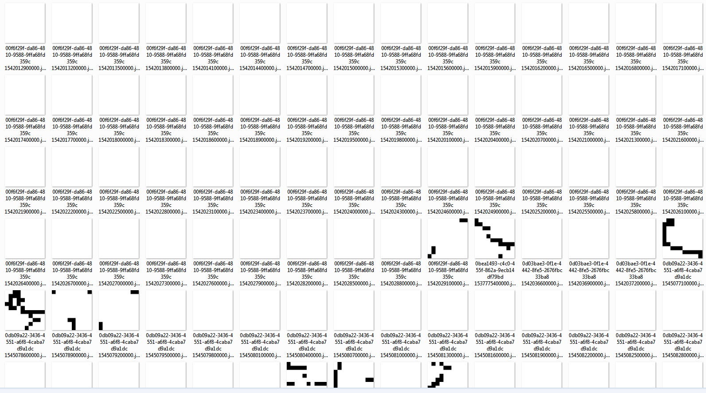
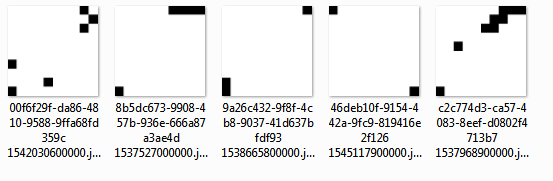
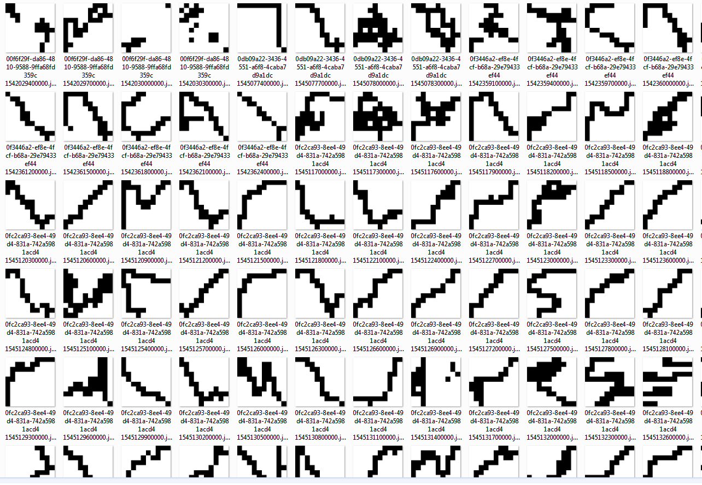
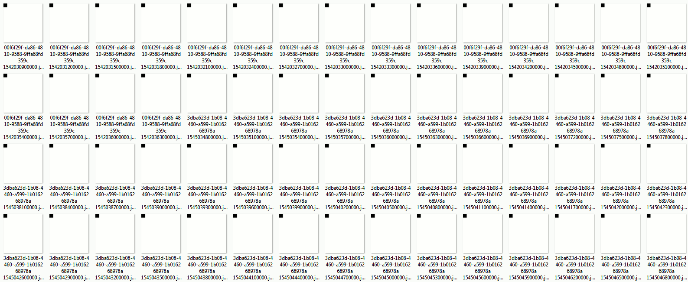
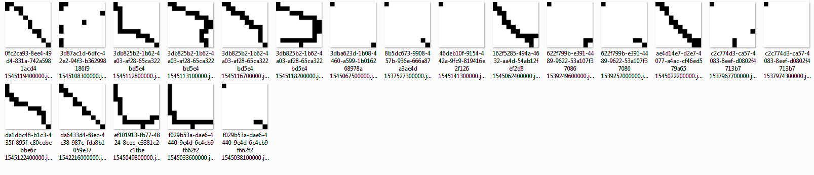

home / 2019.02.08 19:20 / apache spark / mllib / scala / clustering
This post is not an end-to-end lesson, but a small and incomplete part of a larger exploration. It shows an example of loading GPS data (latitude and longitude) recorded by some device (phone, car, bike) from Hadoop into a Spark job. This data is processed and vectors are extracted from the GPS data and prepared for a clustering algorithm. A simple clustering algorithm, provided by the machine learning arm of Spark, is applied. The data is then split into its respective clusters and exported as images, to offer us a way to visually inspect the clusters.
The objective here is to get more acquianted with Spark and (Spark) MLlib and build the tools necessary to both work with GPS data and create a visual display of the results. The key aspects of getting valuable results from machine learning, preparing the input features and finding the appropriate algorithm to build your model, are not part of this exercise, so the easiest approach was chosed in both of those cases. The purpose of this post is to be a record of a functional pipeline that can be used in further experimenting.
The following are the dependencies for the project, as defined in the build.sbt file:
ThisBuild / scalaVersion := "2.11.12"
val spark = "org.apache.spark" %% "spark-core" % "2.4.0" % "provided"
val sparkSql = "org.apache.spark" %% "spark-sql" % "2.4.0" % "provided"
val sparkMl = "org.apache.spark" %% "spark-mllib" % "2.4.0"
val netlibJava = "com.github.fommil.netlib" % "all" % "1.1.2"
lazy val mltest = (project in file("."))
.settings(
name := "ML Test",
libraryDependencies ++= Seq(
sparkSql,
sparkMl,
netlibJava
)
)
val meta = """META.INF(.)*""".r
assemblyMergeStrategy in assembly := {
case PathList("javax", "servlet", xs @ _*) => MergeStrategy.first
case PathList(ps @ _*) if ps.last endsWith ".html" => MergeStrategy.first
case n if n.startsWith("reference.conf") => MergeStrategy.concat
case n if n.endsWith(".conf") => MergeStrategy.concat
case meta(_) => MergeStrategy.discard
case x => MergeStrategy.first
}
I also have a project folder that contains the folowing files:
build.propertiessbt.version=1.2.3
plugins.sbtaddSbtPlugin("com.eed3si9n" % "sbt-assembly" % "0.14.8")
Running sbt assembly should prepare a jar that can be submitted to your Spark cluster.
Everything is written as simple as possible, in a file called MLTest.scala. The first thing we do is
configure our imports.
import java.awt.image.BufferedImage
import java.io.File
import java.sql.Timestamp
import javax.imageio.ImageIO
import org.apache.spark.ml.classification.LogisticRegression
import org.apache.spark.ml.clustering.KMeans
import org.apache.spark.ml.evaluation.ClusteringEvaluator
import org.apache.spark.ml.linalg.{Vector, Vectors}
import org.apache.spark.sql._
import org.apache.spark.sql.functions._
import org.apache.spark.sql.types._
import scala.util.Random
We then have some utility code, used to extract the program arguments from a map or use a default.
object MLTest {
private val WINDOW = 5 * 60 * 1000
private def getOrElse(name: String, default: String)(implicit argmap: Map[String, String], detailedLogs: Boolean = true) = {
val result = argmap.getOrElse(name, default)
if (detailedLogs) println(s"$name: $result")
result
}
The first thing we do in the program is read the input arguments. We need to have the details of the HDFS system
where our data is on. We also have a flag named local that we can set to true to run the spark program
on our computer, instead of a Spark cloud.
def main(args: Array[String]): Unit = {
implicit val detailedLogs = true
implicit val argmap: Map[String, String] = args
.map(a => a.split("="))
.filter(a => a(0).nonEmpty && a(1).nonEmpty)
.map(a => a(0) -> a(1))
.toMap
val applicationName = this.getClass.getCanonicalName
val runLocal = getOrElse("local", "false").toBoolean
val hdfsHost = getOrElse("hdfs_host", "127.0.0.1")
val hdfsPort = getOrElse("hdfs_port", "9000")
val hdfsSource = getOrElse("hdfs_source", "/user/data")
We then create and configure a Spark session and import the implicits, so that our data conversions work.
implicit val spark: SparkSession = (if (runLocal) SparkSession.builder.master("local[*]") else SparkSession.builder())
.appName(applicationName)
.getOrCreate()
import spark.implicits._
spark.sparkContext.setLogLevel("WARN")
spark.conf.set("spark.sql.session.timeZone", "UTC")
Our data is recorded as a track. The device saves the location of a person on a hike or a walk, or while biking, or while driving, from the start of the activity to the end of that activity, and that is a whole track. But the track is actually divided in segments. That means the device does not save all the information of a track in a single file, but partitions it into multiple files, based on how long that track is (think log segmentation). These files are then pushed in HDFS, and these files are our raw data. The files are in parquet format.
val segments = spark.read
.format("parquet")
.option("maxFilesPerTrigger", 1)
.option("mergeSchema", true)
.load(s"hdfs://$hdfsHost:$hdfsPort$hdfsSource")
The files may contain a lot more data than just the GPS, but we'll filter out that data and keep only the ID of the track, the timestamp (the time at which the GPS position was recorded) and the GPS coordinates.
val gps = segments.select(
col("trackId").as("id"),
col("timestamp").as("time"),
array(
col("latitude").cast(FloatType),
col("longitude").cast(FloatType)
).as("gps")
)
We will next need to split a track in equal sections. It may be more useful to look at and clasify "movements" made by our device rather than the entire track. Intuitively, a track will be composed of the device veerig right, veering left, going aroud in a cicle. These can be considered the components of a track, and we want to identify these components through a clustering algorithm. As an exercise. We will partition our tracks based on time, into 5 minute sections.
val getTimeSection = functions.udf((time: Timestamp) => new Timestamp((time.getTime / WINDOW) * WINDOW))
val measurements = gps.withColumn("timeSection", getTimeSection(col("time")))
val sections = measurements.groupBy("id", "timeSection")
.agg(collect_list("gps").as("gps"))
sections.show(10)
But we are not done preparing the data. A track may be shorted than 5 minutes, or it will not divide exactly into 5 minute sections. This means the number of GPS coordinate we have in each section will vary. We need to create feature vectors for our learning algorithms that have the same number of features. We are also looking for directional patters in our tracks. For this, we will construct 2D tiles out of each section, matrixes whitch should paint the path the device is taking during that time.
We will be using 10 by 10 tiles, which will give us a feature vector of size 100. The createTile
function will filter out invalid GPS coordinates, copmute the span for each dimension and use those spans to
normalize the coordinates, then use the normalized coordinates to "paint" the tile, giving us the feature
vector. We apply these operations to each section.
val tileSize1 = 10
val tileSize2 = 10
val createTile = functions.udf((gps: Seq[Seq[java.lang.Float]]) => {
def getIndex(c1: Int, c2: Int) = c1 * tileSize2 + c2
val tile: Array[Double] = Array.fill(tileSize1 * tileSize2){0.0}
val valid = gps.map(e => (e(0), e(1)))
.filter(e => e._1 != null && e._2 != null)
if (valid.nonEmpty) {
val min1 = valid.map(_._1).min
val max1 = valid.map(_._1).max
val span1 = max1 - min1
val min2 = valid.map(_._2).min
val max2 = valid.map(_._2).max
val span2 = max2 - min2
val normalized = valid.map(e => (
(e._1 - min1) / span1,
(e._2 - min2) / span2)
)
val quantized = normalized.map(e => (
(e._1 * (tileSize1-1)).toInt,
(e._2 * (tileSize2-1)).toInt)
)
quantized.foreach(e => tile(getIndex(e._1, e._2)) = tile(getIndex(e._1, e._2)) + 1)
}
tile
})
val tileSizeComputation = functions.udf((tile: Seq[Double]) => tile.length)
val tiles = sections.withColumn("tile", createTile(col("gps")))
.withColumn("tileSize", tileSizeComputation(col("tile")))
tiles.show(10)
Now we are ready to feed our data to the learning algorithm. We'll convert the tiles into vectors, and update the IDs of those vectors to contain the start time of the sections. We then use Spark's MLlib to train a KMeans cluster model with 5 centers.
val dataset = tiles
.map(s => (
s.getString(s.fieldIndex("id")) + " " + s.getAs[Timestamp]("timeSection").getTime.toString,
Vectors.dense(s.getAs[Seq[Double]]("tile").toArray))
)
.toDF("label", "features")
val resultFolderPath = "clustering-result-" + System.currentTimeMillis()
val kmeans = new KMeans().setK(5).setSeed(1L)
val model = kmeans.fit(dataset)
Once we have our model, we can go over the data and classify it, put each section into it's cluster. As we print all this to the console, we see a lot of numbers, which are hard to understand (for me, at least). We want a better way to represent our data, so we'll have to paint our tiles into image files, and output those image files to folders, with a separate folder for each cluster. The following code does just that, and you can look at the end of this post to see how we write a vector to an image file.
val predictions: DataFrame = model.transform(dataset)
val evaluator = new ClusteringEvaluator()
predictions.show(10)
predictions
.map(p => p.getAs[String]("label") + "," + p.getAs[Int]("prediction").toString)
.write.csv(resultFolderPath)
def createFolder(path: String) = new File(path).mkdir()
val predictionGroups = predictions
.groupBy("prediction")
.agg(collect_list(
struct(col("label"), col("features"))
).as("tiles"))
predictionGroups.show(10)
predictionGroups.foreach(cluster => {
val clusterPath = resultFolderPath + "\\" + cluster.getAs[String]("prediction")
createFolder(clusterPath)
val tiles = cluster.getSeq[Row](cluster.fieldIndex("tiles"))
tiles.foreach(tile =>
ArrayToImageWriter.writeArray(tile.getAs[Vector](1).toArray, tileSize1, tileSize2, clusterPath + "\\" + tile.getString(0) + ".jpg")
)
})
At the end of the program we can look at the cluster centers.
val silhouette = evaluator.evaluate(predictions)
println(s"Silhouette with squared euclidean distance = $silhouette")
println("Cluster Centers: ")
model.clusterCenters.foreach(println)
}
}
We can now look at our clusters and see if any patterns have emerged. The first cluster seems to have centered on mostly sections that don't have any GPS data at all, and there are some weird entries where the GPS values seem to be erratic.

Our second cluster is very small and contains tracks that seem interrupted and have data in the corners of the tile, apparently around the anti-diagonal, north-east to south-west.

Our third cluster is more interesting, we have a lot of data here, a lot of activity in the center and on the diagonals. This cluster looks like a good canditate for splitting. We can maybe increase the number of clusters, or we could select only the tiles in this cluster and split them into sub-clusters.

In the fourth cluster we seem to have tracks where we had GPS data, but the device stood still. This cluster seems very consistent.

The last cluster seems to show situations where the device moved along the main diagonal, north-west to south-east.

We now have our clusters and visualization. Are the results useful? Not so much. We can continue experimenting with different machine learning algorithms, different parameters, different ways of building our feature vectors, but we have a starting point, a pipeline that includes data transformation and ends in result visualization.
Following is a small Scala object that can write an array into a black-and-white image at a certain path on disk.
object ArrayToImageWriter {
def writeArray(data: Array[Double], size1: Int, size2: Int, path: String) = {
write(
data.map(d => d.toInt),
size1,
size2,
path
)
}
def write(data: Seq[Int], size1: Int, size2: Int, path: String) = {
val scale = 10
val width = size1 * scale
val height = size2 * scale
val img = new BufferedImage(width, height, BufferedImage.TYPE_INT_ARGB)
val black = getPixel(255, 0, 0, 0)
val white = getPixel(255, 255, 255, 255)
for (y <- 0 until height) {
for (x <- 0 until width) {
val p = if (data(getIndex(x, y, scale, size1)) == 0) white else black
img.setRGB(x, y, p)
}
}
val f = new File(path)
ImageIO.write(img, "png", f)
}
def getIndex(x: Int, y: Int, scale: Int, size1: Int) = (y / scale) * size1 + (x / scale)
def getPixel(a: Int, r: Int, g: Int, b: Int) = {
(a << 24) | (r << 16) | (g << 8) | b
}
def test()= {
val size1 = 10
val size2 = 10
val data = Seq(
0, 0, 0, 0, 0, 0, 0, 0, 0, 0,
0, 0, 0, 0, 0, 0, 0, 0, 0, 0,
0, 0, 1, 1, 0, 0, 1, 1, 0, 0,
0, 0, 1, 1, 0, 0, 1, 1, 0, 0,
0, 0, 0, 0, 0, 0, 0, 0, 0, 0,
0, 1, 0, 0, 0, 0, 0, 0, 1, 0,
0, 0, 1, 0, 0, 0, 0, 1, 0, 0,
0, 0, 0, 1, 1, 1, 1, 0, 0, 0,
0, 0, 0, 0, 0, 0, 0, 0, 0, 0,
0, 0, 0, 0, 0, 0, 0, 0, 0, 0
)
write(data, size1, size2, "output.jpg")
}
def main(args: Array[String]): Unit = {
test()
}
}
And the image generated by the test method is: